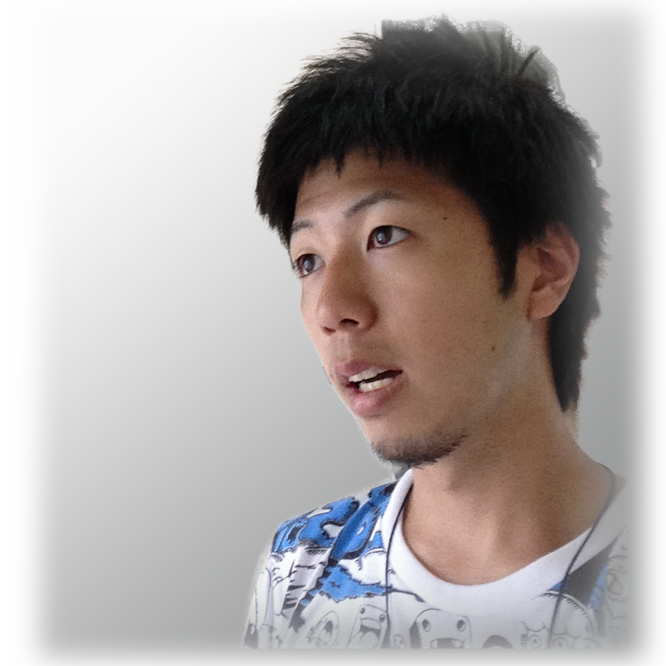

Hi, My name is Kenshiro.
I'm a student at a graduate school in Japan and taking a masters degree.
I'm studying "Usability" in order to improve the environment of workers, and I'm also trying to make applications to make our world enjoyable.
My dream is to eliminate unhappiness around the world as much as possible.
I believe we can live and celebrate life conveniently, so I make efforts to change our world for us to savor it.
If you need further information or have any comments, don't hesitate to contact me!

Biography
I was a senior in high school, and focused on playing tennis every day instead of studying.
I didn’t expect that I would study so hard to pass the entrance examination of my university.
After entering my university, I began to have a part-time job at cram school and also became a tennis coach in my high school for 3 years to show my gratitude to my teachers.
It's not until I enrolled a laboratory and studied 'Usability' that I realized I could contribute to our society. I started making applications with my friends for applying what we learned to society.
I started studying English in the Philippines because Iits my desier to contribute something in the world. I am also learning many cultures and making a service to make people’s life more enjoyable!